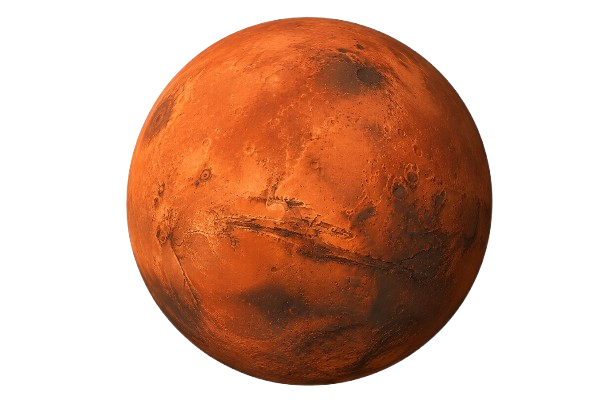
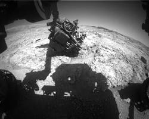
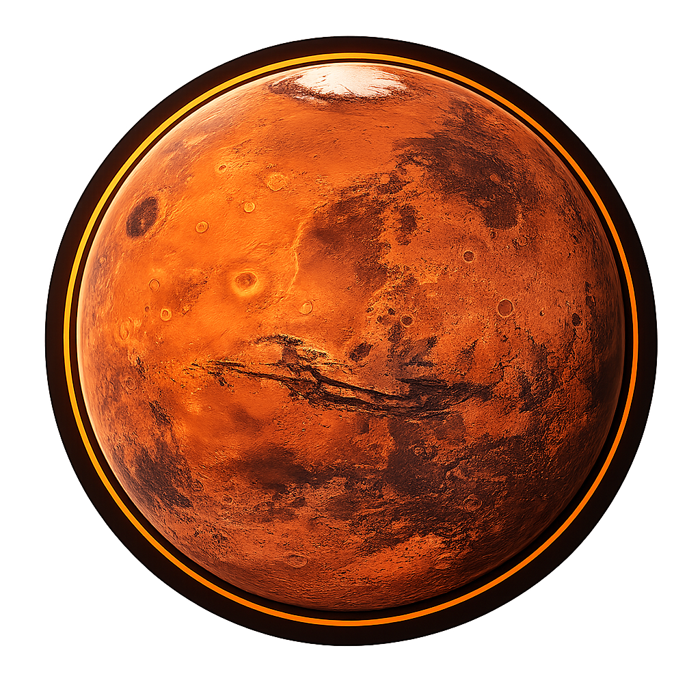
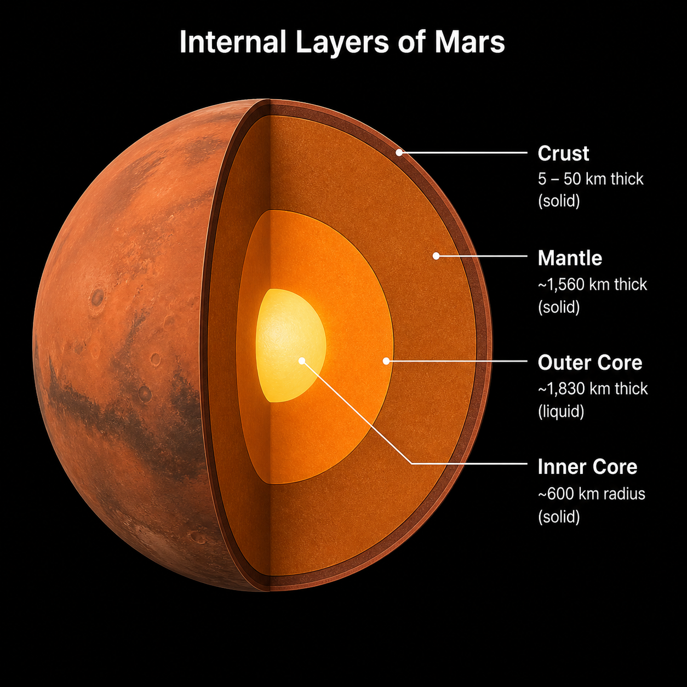

Planet Mars
Mars is the fourth planet from the Sun and is often called the “Red Planet” because of its rusty, iron-rich soil.
Quick facts
- Type: Rocky planet
- Distance from Sun: About 228 million km
- Length of year: 687 Earth days
- Moons: 2 (Phobos and Deimos)


NASA's Curiosity rover exploring the Martian surface.
Did you know?
Mars has the largest volcano in the Solar System — Olympus Mons, which is three times taller than Mount Everest.

Learn more about MarsUse the tabs below to explore different aspects of Mars.
Mars is smaller than Earth and has a thin atmosphere made mostly of carbon dioxide. Its surface is covered in dust, craters, and ancient riverbeds that suggest water once flowed there.
Mars has the largest volcano in the Solar System, Olympus Mons, which is about three times taller than Mount Everest. The planet also has a massive canyon system called Valles Marineris.
Mars has been explored by orbiters, landers, and rovers. NASA's Perseverance rover is currently studying the planet's surface and searching for signs of ancient microbial life.
Mars Interior

A simple diagram showing the internal layers of Mars.
Why Mars matters
Mars is one of the most studied planets because it may have once supported life. Understanding Mars helps scientists learn how planets change over time and whether humans could one day visit or live there.
Studying Mars also helps scientists understand how planets lose their atmospheres, how climates change over time, and whether humans could one day live on another world.